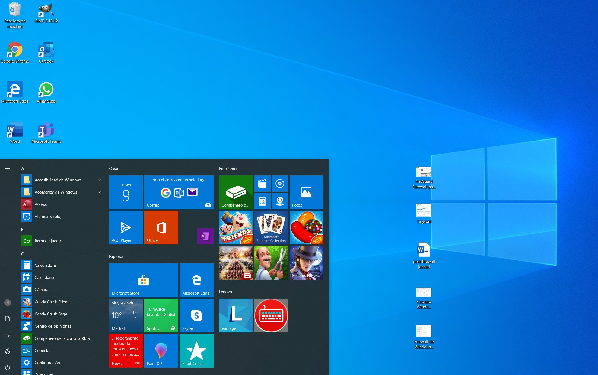

Windows 1 (1985)
Aunque fue anunciado en 1983 por Bill Gates, su lanzamiento no se produjo hasta dos años más tarde, concretamente el 20 de noviembre de 1985. Se popularizó gracias a su interfaz gráfica basada en ventanas que le da su nombre.
ntre sus características de escritorio destacaban el manejo de archivos MS-DOS, calendario, bloc de notas, calculadora y reloj.
Windows 2 (1987)
Dos años más tarde (9/12/1987) Microsoft lanza Windows 2.0 con iconos de escritorio, memoria ampliada, mejores gráficos y la posibilidad de superponer ventanas, controlar el diseño de la pantalla y usar atajos con el teclado para acelerar el trabajo.
Constituyó la primera plataforma de Windows para aplicaciones hoy en día tan comunes como Word o Excel
Windows 3 (1990)
El 22 de mayo de 1990 aparece Windows 3.0, la primera versión que alcanzó éxito comercial, con varios millones de ventas en el primer año. Se introdujeron cambios en la interfaz de usuario importantes, además de mejorar la explotación de la capacidad de gestión de la memoria de los procesadores.
El Administrador de Programas y el Administrador de Archivos hicieron su primera aparición en esta versión, junto con el panel de control rediseñado y algunos juegos como el Solitario, Corazones y Buscaminas. ¿Quién no ha jugado alguna vez al mítico solitario?
Windows NT (1993)
Aunque la gente de marketing de Microsoft intenta convencer al mundo de que NT significa New Technology, lo cierto es es que las siglas NT provienen del nombre en clave que tenía el proyecto cuando estaba en fase de desarrollo N-Ten. El proyecto final vio la luz el 27 de julio de 1993.
Para llevar a cabo este desarrollo desde cero, se asociaron IBM con Microsoft. Construyeron un SO de 32bytes multitarea, multihilo, multiprocesamiento, multiusuario con un núcleo híbrido y una capa de hardware de abstracción para facilitar la portabilidad entre plataformas.
Windows 95 (1994)
Un año y mes después, el 24 de julio de 1994, Microsoft lanzó Windows 95. Llevaron a cabo una campaña publicitaria sin precedentes que incluía la canción de los Rolling Stones "Start me up". Los detractores de Windows no desaprovecharon la oportunidad de mofarse indicando que la letra de la canción decía "...you make a grown man cry...", pero no esto no evitó que en solo 5 semanas se vendieran 7 millones de copias ¡todo un récord!
Windows 95 estaba más orientado al consumidor, poseía una interfaz de usuario completamente nueva y características que hoy nos resultan muy familiares, pero que entonces constituyeron algo revolucionario, como por ejemplo el botón de Inicio, la Barra de Tareas, el Área de Notificaciones (recordemos que era la época del módem, fax,...), etc.
Windows 98 (1998)
El 25 de junio de 1998 ve la luz la primera versión diseñada específicamente para el consumidor. Se introducen una serie de mejoras en la interfaz de usuario a través del paquete de actualizaciones de escritorio de Windows de Internet Explorer 4. Por ejemplo, la posibilidad de minimizar una ventana con un simple clic en el icono de la barra de herramientas, los botones de navegación hacia "Adelante" y "Regresar", etc..
Con Windows 98 se mejoró el reconocimiento de escáneres, ratones, teclados y palancas.
Windows Me (2000)
El 14 de septiembre de 2000 sale a la venta el último de la línea de Windows 9x basado en DOS, Windows Millennium Edition, considerado como una de las peores versiones de Windows que ha existido. (Aunque como dice el refrán, alguien vendrá que bueno me hará ;P)
A diferencia de W95 y W98 les faltaba el soporte en modo real de DOS. A su favor hay que decir que poseía una característica muy útil, a saber "Restaurar el Sistema" lo cual permitía a los usuarios establecer una configuración estable del sistema anterior al actual
Windows XP (2001)
Tan solo una año después, el 25 de octubre de 2001, el primer sistema operativo de consumo basado en arquitectura NT, cuyo nombre en clave era Whistler, se puso a la venta con el nombre de XP de eXPeriencie. Resultó ser uno de los más exitosos, en diciembre de 2013 su cuota de mercado alcanzó los 500 millones de ordenadores. Tras 12 años en el mercado ¡12 años!, en abril de 2014 Microsoft dejó de dar soporte.
Windows XP introdujo nuevas características como el uso de una nueva interfaz de manejo más sencillo, la posibilidad de utilizar varias cuentas de usuario a la vez, la capacidad de agrupar aplicaciones similares en la barra de tareas, por solo nombrar unas cuantas.
Windows Vista (2007)
Nunca habíamos esperado tanto tiempo por un cambio de SO, ¡más de 5 años! A Microsoft le hubiese gustado tenerlo listo para poder hacer caja en la Navidad de 2006, pero tuvo que esperar hasta el 30 de enero de 2007 para lanzarlo mundialmente. Se recuerda como un sistema que llegó tarde, mal y arrastro. Las principales quejas se centraron en las funciones de seguridad, administración de derechos digitales, los requisitos de hardware y el rendimiento y la compatibilidad del software.
A su favor hay que recordar las características por las cuales todo el mundo lo identifica, a saber: la nueva interfaz gráfica que permitía la transparencia en las ventanas, la aplicación Flip-3D que se activaba con la combinación de teclas Win + Tab, y mostrando con un efecto 3D las ventanas que estaban abiertas podías cambiar de una a otra. Además, permitía tener una vista preliminar de las ventanas abiertas, con solo pasar el ratón sobre los botones en la barra de tareas.
Por cierto, ¿recordáis cuando en abril Stack Overflow desveló las preferencias de los programadores y descubrimos que 2015 todavía quedan programadores que usan Windows Vista y Windows XP :O? Mejor vamos a olvidar esto último y sigamos con el repaso, ¡ya queda poco!
Windows 7 (2009)
Muchos consideran a Windows 7 como el SO que a Windows Vista le gustaría haber sido. De hechos, en sus orígenes fue concebido como una especie de actualización de Windows Vista, lo que permitió mantener cierto grado de compatibilidad con aplicaciones y hardware. En cuanto salió al mercado el 22 de octubre de 2009 comenzó a comerse la cuota de mercado de sus predecesores
Windows 7 destaca por ofrecer una interfaz rediseñada, una nueva barra de tareas, mejoras importantes en el rendimiento del SO y sobre todo porque W7 marcó el debut de Windows Touch, que permite explorar la web desde pantallas táctiles
Windows 8 (2012)
El 25 de octubre de 2012 hizo su puesta de larga el polémico Windows 8. Los usuarios se desgarraban las vestiduras... ¡no tenía botón de Inicio! ¿Cómo iban a sobrevivir sin él?
u interfaz de usuario fue modificada para hacerla más amigable y fácil de usar con la pantallas táctiles, además de poder seguir usando obviamente el teclado y ratón. Es el momento de las Apps cuyos iconos de diferentes tamaños ocupan la pantalla, se pueden agrupar, mostrar notificaciones,... El explorador de archivos ahora deja a solo un clic de ratón, funciones que antes estaban escondidas y como esto podríamos enumerar cientos de nuevas características, pero sabemos que estáis impacientes por llegar al siguiente.
Windows 10 (2015)
Tras tres años de dura travesía por el desierto sin botón de inicio, el 29 de julio de 2015 hace su aparición estelar Windows 10. ¿Y ahora qué?

De todos modos hay una "regla universal" que se viene cumpliendo desde que salió Windows: y es que los usuarios siempre consideran una versión buena y la siguiente mala, alternándolas. Por ejemplo, Windows XP: bueno, pero Windows Vista: malo. Y si te fijas en la lista se ha cumplido siempre
Windows 11 (2021)
Tras la salida de windows 10 (sistema operativo muy bien aceptado) deciden sacar windows 11 para renovar la interfaz grafica, como podemos ver el windows 11 la barra de tareas esta centrada estilo MAC X las novedades de este sistema son que el efecto aereo de windows se ve mucho mas bonito a comparacion del rival windows 10, unas de los problemas que tiene este sistema es que necesitas TPM2.0 para poder instalar el sistema operativo si no lo tienes no podras seguir con la instalación mucha gente se a quejado de este gran problema ya que deja muchos PC fuera, esperemos que en un futuro no muy lejano solucione este error